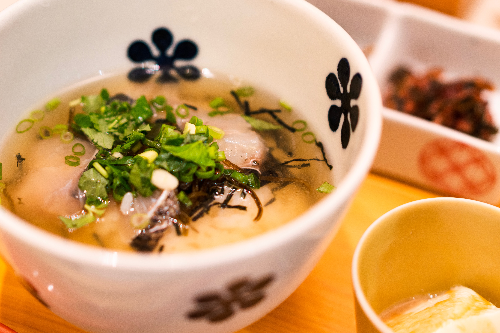

Chef John's Miso Soup Recipe

This miso soup is made entirely from scratch and has a simple yet complex flavor. You can now enjoy miso soup at home and not just in a Japanese restaurant.
I don't like to start a meal with soup. I much prefer to begin with something light, slightly acidic, and subtly bitter to get the taste buds going, and to further stimulate my appetite. Soups are usually filling, and there's nothing worse, culinarily speaking, than being satiated before the final courses are served. The one huge exception to this would be miso soup.
Ingredients
-
7 ounces silken tofu, drained and cut into 1/2-inch cubes
-
4 tablespoons white miso
-
2 tablespoons red miso
-
dried wakame seaweed flakes
-
shredded wakame or hijiki seaweed (soaked in water until soft) (Optional)
-
2 green onions, thinly sliced, plus more to garnish
Chef John's Miso Soup Step-By-Step
-
Pour cold water into a saucepan. Add kombu and soak for 30 minutes.
-
Set pan on the stove over medium heat, and wait until water just starts to simmer. Turn off heat, and remove kombu with a strainer. Squeeze out any liquid back into the pan, and discard kombu.
-
Turn heat back on to med-high, and bring to a simmer. Stir bonito flakes into the simmering liquid, and turn off the heat. Let sit for 10 minutes, before staining and reserving the liquid, also known as the "dashi."
-
Pour dashi into a saucepan over medium heat. Add pre-soaked, shredded seaweed, soy sauce, and green onions. Bring to a simmer, and reduce heat to low. Place a small strainer over the pan, and add miso pastes. Submerge strainer halfway down into the hot dashi, and stir slowly until all the miso has dissolved and passed through into the soup.
-
Stir in tofu, and continue cooking on low until tofu is heated through, about 2 minutes. Taste and season with more soy sauce if needed.
-
Serve immediately with sliced green onions on top.